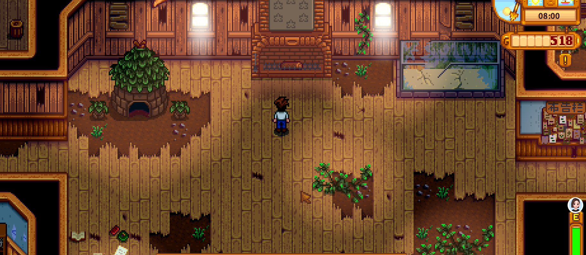
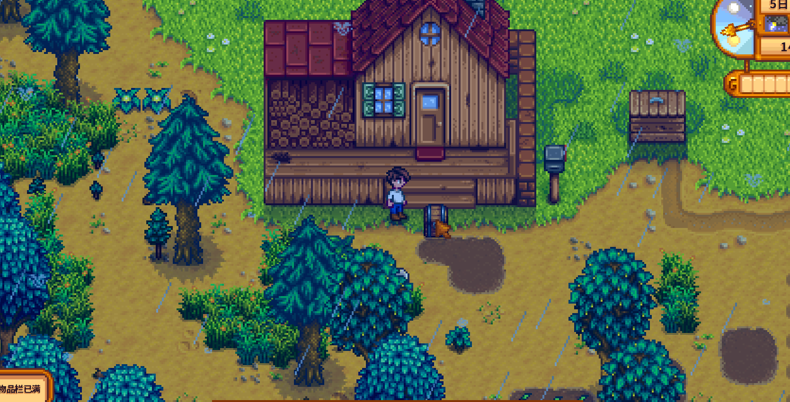
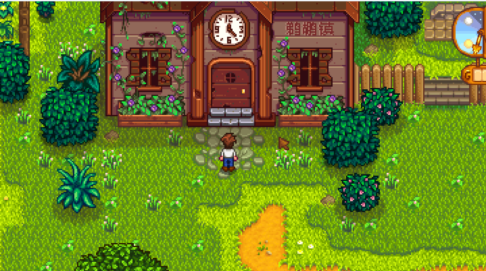

Quick answers (read this first)
- Open the Community Center early so you recognize what to keep—do not try to finish every room in Spring.
- Best early “life changer” goals: Pantry → Greenhouse and Boiler Room → minecarts.
- Collect seasonal forage in season; missing a season hurts more than missing one random fish.
- Vault bundles are a gold sink—do them when you are flush, not when you still need Summer seeds.
- Bulletin Board (gifts / cooked items) can wait; friendship routes are optional in early Year 1.
Who this is for (and who should skip)
Use this if the Community Center feels like a wall of red slots and you do not know which room is worth stress.
Skip or skim if you already run Joja Mart on purpose, or you already have a perfected bundle spreadsheet. This page is for calm Year 1 players who want reward priorities—not a full item encyclopedia.
Version note: Stardew Valley 1.6-era. We describe priorities, not guaranteed Traveling Cart buys or fabricated drop rates. Confirm bundle slots on your board in-game.
From our Year 1 save (real pitfalls): We opened the hall, read the Junimo note, then built a farm chest labeled for “maybe bundle” items. Selling first and checking the board later cost us Spring forage we still needed.
Pros & cons of a “reward-first” Community Center plan
| Details | |
|---|---|
| Pros | Greenhouse and minecarts massively reduce travel pain; seasonal collecting becomes intentional; less panic buying. |
| Cons | You will leave some rooms incomplete longer; completionists may feel “behind” compared to wiki 100% checklists. |
| Use when | First playthrough, short sessions, or you keep emptying your wallet on random cart items. |
| Skip when | You want a same-season full clear challenge or you already know your preferred room order. |
Interactive priority checklist
Tick items as you go. Progress stays in this browser only.
Safe to skip early (anti-FOMO)
- Finishing Bulletin Board before you have a kitchen routine.
- Spending seed money on Vault gold bundles.
- Buying every Traveling Cart mystery item “just in case.”
- Restarting the year because one seasonal forage week went badly.
- Trying to 100% Fish Tank before you enjoy fishing.
Room priority: what to chase first
Think in rewards, not “number of red slots remaining.”
| Room | Why it matters | Year 1 stance |
|---|---|---|
| Pantry | Completing it unlocks the Greenhouse—huge for later seasons and calm income. | High priority across Spring–Fall planting. |
| Boiler Room | Unlocks minecarts (farm / town / mines travel QoL). | High priority if you already mine after chores. |
| Crafts Room | Seasonal forage; bridge reward helps quarry access. | Medium–high: collect in-season, do not obsess off-season. |
| Fish Tank | Good when you fish for money / skill anyway. | Medium: easy fish first; rare fish later. |
| Vault | Pure gold bundles; rewards are nice but cash-competitive with seeds/upgrades. | When flush—after backpack / key tools feel okay. |
| Bulletin Board | Gifts, cooking, friendship-adjacent asks. | Low early—return after kitchen + friendships feel natural. |
Real screenshots from our Year 1 save
Original captures from the same farm save—no stock art.

Game screenshot © ConcernedApe — used for guide commentary

Game screenshot © ConcernedApe — used for guide commentary

Game screenshot © ConcernedApe — used for guide commentary
How to actually run bundles week to week
- Morning: Water crops. If a crop is bundle-relevant and you only have one, think before selling the first harvest.
- On the walk to town: Pick forage. Put “maybe bundle” items in the Bundles chest the same day—do not trust your memory at 1am.
- Once per week: Open the Community Center and turn in anything already complete. Empty red slots teach what to plant next.
- After chores: Mines for Boiler Room ores or fishing for easy Fish Tank progress—not both until energy feels comfortable.
- Season change day: Re-check Crafts Room / Pantry needs before you sell leftover seasonal forage.
Pantry vs Boiler Room: early decision table
| If your evenings look like… | Lean toward… | Because… |
|---|---|---|
| You enjoy planting and checking Pierre’s | Pantry / Greenhouse path | Your playtime already produces crops; Greenhouse pays that back hard. |
| You already go to the mines after watering | Boiler Room / minecarts | Ores arrive “for free” with your routine; carts save future travel time. |
| You hate mining and love rain days | Fish Tank easy bundles | Progress matches fun; still plant Pantry staples in the background. |
Common mistakes
- Selling every gold-quality crop instantly. Keep a few candidates for Pantry quality slots before you automate “sell all.”
- Ignoring seasons. Forage bundles are calendar homework. Off-season panic buys hurt more than planting ahead.
- Vault before backpack. Paying gold bundles while your inventory is still tiny makes every other system worse.
- Traveling Cart FOMO. If you are not one item away from finishing a high-priority room, walk away.
- Treating Bulletin Board as a Spring emergency. Friendship cooking routes are Mid+ Year 1 comfort content for most new players.
Alternative variations
- Greenhouse-first farmer: Track Pantry crops each season; Boiler Room only with leftover mine trips. Best if you love planting.
- Minecart-first explorer: Prioritize ores / geodes while keeping a minimal Pantry plant list. Best if town running feels exhausting.
- Joja path (intentional): If you prefer buying progress with gold and skipping bundle hunting, that is a valid playstyle—just know this guide’s room order is for Community Center restorers, not Joja shoppers.
- Short-session variant: One turn-in visit per week + Bundles chest only. No daily pressure to “clear red slots.”
FAQ
Do I need to finish the Community Center in Year 1?
No. Year 1 should unlock a couple of life-changing rewards and teach seasonal collecting. Full completion can spill into Year 2 without “failing.”
Is the Greenhouse really that important?
For calm players, yes: it reduces seasonal panic and stabilizes income later. If you hate crops entirely, minecarts + fishing may feel better—but most first-timers benefit from Pantry progress.
Should I buy bundle items from the Traveling Cart?
Only when you are close to finishing a high-priority room and the item is the blocker. Random cart shopping is how Spring seed budgets disappear.
What if I chose Joja Mart instead?
Then bundle room order does not apply the same way. Focus on gold income and the Joja improvements you actually want; use our Early money guide for pacing.
How does this connect to Spring?
Spring is when you open the building, start a Bundles chest, and keep Spring forage. Detailed morning routines live in the Year 1 Spring checklist.
Next steps / related pages
Unofficial fan guide. Stardew Valley is a trademark of ConcernedApe. Valley First Year is not affiliated with the official game.